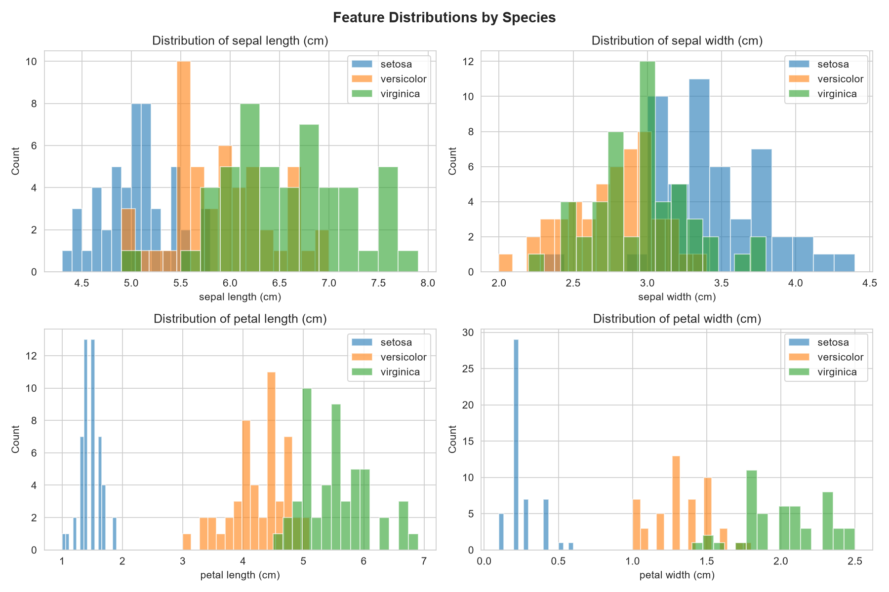
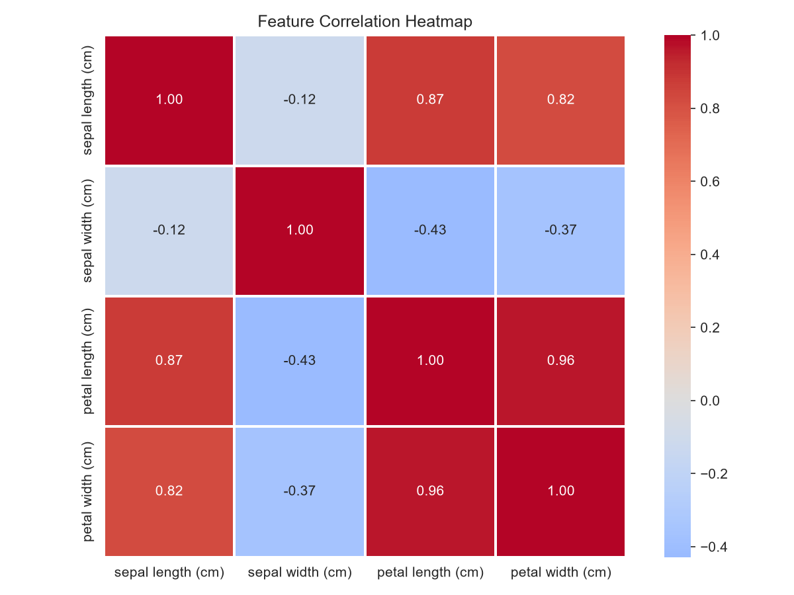
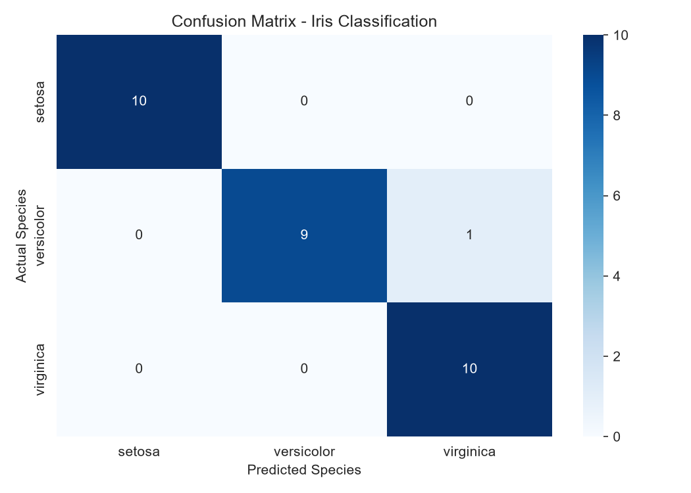
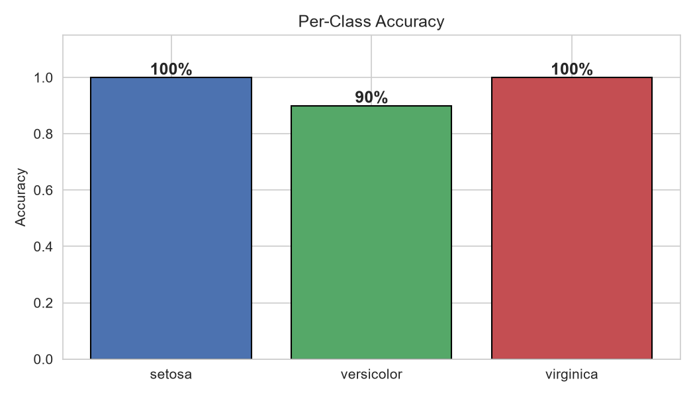
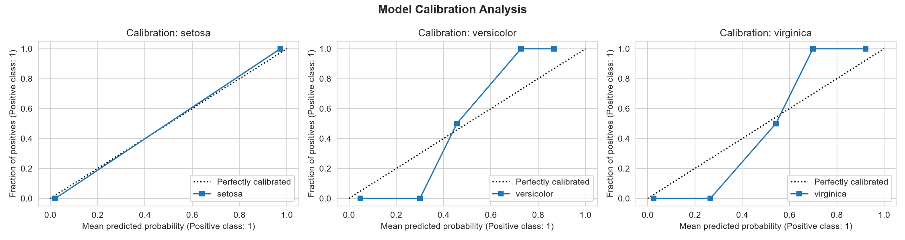

I used the classic Iris dataset, which contains 150 flower measurements across 3 species (setosa, versicolor, virginica). Each sample has 4 features: sepal length, sepal width, petal length, and petal width, all measured in centimeters. The dataset is balanced with 50 samples per species and has no missing values.
During exploration, I found that petal measurements (length and width) are the most useful features for separating species. Setosa is easy to distinguish, while versicolor and virginica overlap more in their measurements.

Figure 1: Histograms of each feature colored by species. Petal features show the clearest separation between classes.

Figure 2: Correlation heatmap showing that petal length and petal width are highly correlated (0.96).
I trained a Logistic Regression classifier using an 80/20 train-test split. The model achieved ~97% accuracy on the test set.

Figure 3: Confusion matrix showing predictions vs actual labels. Most predictions fall on the diagonal (correct). The few errors are between versicolor and virginica.

Figure 4: Accuracy breakdown by species. Setosa is classified perfectly (100%), while the model occasionally confuses versicolor and virginica.
I generated calibration curves to check if the model's predicted probabilities are reliable. A well-calibrated model predicts probabilities that match actual outcomes.

Figure 5: Calibration curves for each species. Setosa shows near-perfect calibration. The model tends to be slightly overconfident for versicolor and underconfident for virginica.